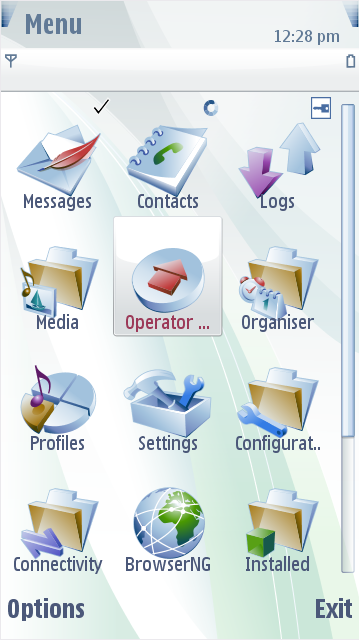
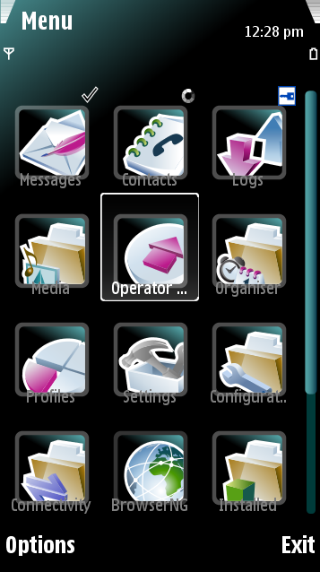

Background
The Symbian mobile phone supports customizing backgrounds in themes. The background of
a theme in Carbide.ui consists of two different component options:
Active Background
This is the active background screen of the mobile phone. Most of the
screens contain an active background.
Idle Background
This is the idle background screen of the mobile phone. This is the
background screen for, for example, the screen that is displayed when
mobile phone's keys are locked and the screen saver is not yet active.
Note:
In Carbide.ui, you can
animate the background.


Figure:
Default and Customized
Active
Background
Note:
When you edit the active
background component, all the screens that contain an active background
are affected. If you do not set an idle background, the active
background component is displayed as the idle background also.